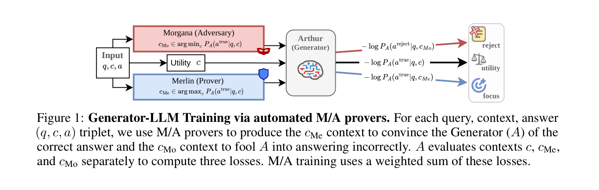
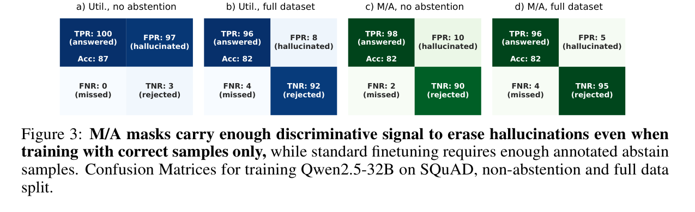
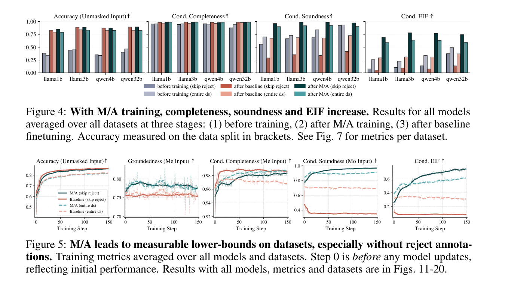

Source correction
The presenter is also a paper author
This video is Letitia Parcalabescu's explanation of research she co-authored at Aleph Alpha Research with Björn Deiseroth, Max Henning Höth, and Kristian Kersting. The primary paper is a 45-page arXiv preprint revised August 9, 2026. The video is an accessible walkthrough; experimental details and assumptions come from the paper.
The work proposes a training and evaluation framework for evidence-grounded RAG. It does not eliminate hallucinations, certify external truth, or turn every generated answer into a formal proof. Its certificate is a conservative lower bound on how strongly model behavior depends on supplied context under the tested masking protocol.
A grounded answer faithfully follows its document. That document can still be wrong. Grounding and truth require different checks.
Executive summary
Teach the model the difference between plausible and supported
Standard RAG evaluation asks whether retrieval found relevant text and whether the final answer is correct. A strong model may answer correctly without using the text at all. Citations do not fully solve this because a model can generate an answer first and attach compatible-looking evidence afterward.
The proposed framework converts question answering into a three-player game. Merlin keeps evidence that supports the correct answer. Morgana removes decisive evidence while preserving plausible surrounding context. Arthur sees no label identifying which context it received. It must learn to answer the original and Merlin cases, but abstain on Morgana's insufficient context.
- ATMAN identifies influential sentences by suppressing attention and measuring how the correct-answer probability changes.
- Merlin and Morgana regenerate examples during training, so their attacks follow Arthur's evolving shortcuts.
- Completeness measures whether supportive evidence enables a correct answer; soundness measures resistance to misleading or insufficient evidence.
- The conditional Explained Information Fraction, EIFcond, estimates a lower bound on context dependence among questions Arthur can already answer correctly.
- Across the reported experiments, unsupported wrong answers fell while utility on unmasked context was preserved.
Why accuracy is insufficient
Nine correct answers can still leave ten answers to verify
The video opens with a useful operational example. A system that is correct 90% of the time but confidently answers every question forces a human to check all ten answers because the system does not identify the one unsupported result. A second system with the same accuracy becomes more useful if it abstains exactly when the required evidence is missing.
This matters in document workflows. If a contract says termination requires 90 days' notice, the model can produce “90 days” by reading the clause, recalling a common convention, exploiting a spurious cue, or guessing. Ordinary answer accuracy treats all four paths as equivalent.
Why citations are not enough
A citation can be post-hoc justification
Asking for a quote or citation is useful for inspection, but it does not prove causal reliance. The model can settle on an answer from its parameters and then retrieve a sentence that merely looks compatible. The citation itself can also be incomplete, unrelated, or fabricated.
The research asks a harder counterfactual question: if decisive evidence is preserved, does the answer survive; and if that same evidence is removed while plausible context remains, does the model stop answering?
The three-player protocol
Merlin helps, Morgana attacks, Arthur decides
Keeps the context spans that most support the known correct answer. Arthur should answer correctly from this evidence.
Removes decisive evidence while retaining believable context. Arthur should recognize insufficiency and abstain.
Receives context of unknown provenance and must choose between a supported answer and rejection.

Merlin and Morgana manufacture evidence masks around the current Arthur. They are not three conversational agents that must all run for every production query. The deployed generator can use a normal RAG request path after training.
How the evidence is selected
ATMAN probes which sentences change Arthur's answer
Exhaustively testing every subset of a long document would be exponential. The paper uses ATMAN, a perturbation-based explainability method, as a practical approximation with linear probing cost. It suppresses attention to one token or sentence at a time and observes the change in the probability of the correct answer.
The difficult negative is not random irrelevant text. It is the right document, topic, entities, and vocabulary with the one fact needed for the answer missing. That is the setting where a fluent language model is most tempted to guess.
Training objective
The only winning policy is to inspect the evidence
| Context | Expected behavior | Purpose |
|---|---|---|
| Original | Answer correctly | Preserve normal task utility |
| Merlin | Answer correctly | Use concentrated supportive evidence |
| Morgana | Abstain | Reject plausible but insufficient context |
Arthur is not told which context type it received. Always answering fails on Morgana. Always refusing fails on original and Merlin contexts. The three losses can be optimized with supervised fine-tuning or reinforcement learning and weighted to match the application's cost asymmetry.
Legal or safety workflows can weight Morgana more heavily to punish unsupported answers. A low-risk support workflow with expensive human escalation can weight utility and Merlin more to avoid unnecessary refusals. The method exposes this trade-off; it does not choose the business threshold automatically.
Adaptive supervision
Morgana attacks the shortcut Arthur uses now
Evidence masks are generated on the fly. After Arthur changes, ATMAN is rerun and the next masks change too. This avoids a static adversarial dataset that captures only yesterday's failure modes.
The video's cow-versus-camel example makes the idea concrete. If every training cow appears on grass and every camel on sand, a classifier can learn background instead of animal shape. Morgana can preserve grass while removing the cow, punish the “cow” answer, and force Arthur toward features that survive the contrast. The language analogue is a relevant-looking passage that mentions the right company and legal topic but lacks the clause that establishes the answer.
Measuring groundedness
Completeness and soundness constrain different failures
| Metric | Question | Failure |
|---|---|---|
| Completeness | Does Arthur answer correctly with Merlin evidence? | Unnecessary rejection or missed evidence |
| Soundness | Does Arthur resist Morgana and abstain? | Unsupported answer or hallucination |
| Model coverage | What fraction can Arthur answer correctly unmasked? | Underlying capability limit |
| EIFcond | Among correct cases, how much signal is certified? | Weak dependence on supplied evidence |
Error becomes uncertainty, represented with binary entropy. The protocol derives a lower bound on mutual information between selected evidence and correct behavior. A lower bound is crucial: a score of 0.60 means at least 60% of the relevant predictive information is certified under the protocol, not that the other 40% definitely came from guessing.
Conditional EIF evaluates only examples the unmasked model already answers correctly. This separates capability from grounding and avoids rewarding an incompetent model merely because its denominator is small.
Experimental results
Unsupported answers fall without sacrificing normal accuracy
The paper evaluates four instruction-tuned models from 1B to 32B parameters across five QA benchmarks, with six dataset settings. Generator training uses LoRA for at most 200 steps; the paper reports a 64-GPU training setup because masks are produced during optimization.
- EIFcond improves by 0.10–0.40 over instructed models and by 0.33–0.38 over vanilla fine-tuning.
- Five of six dataset settings reach EIFcond of at least 0.55; aggregate training curves approach roughly 0.60.
- Accuracy on original unmasked context remains comparable to vanilla fine-tuning, avoiding the trivial “reject everything” solution.
- Abstention emerges even on datasets without manually labeled unanswerable questions.


Closing the RAG loop
The same masks can train retrieval
Merlin contexts become extra hard positives: compact evidence that is sufficient for the answer. Morgana contexts become difficult negatives: topically similar text that lacks the decisive fact. Replacing ordinary negatives with these model-informed examples improves MRR and Recall@k in the reported retriever experiment, including a two-point gain in Recall@1.
This is useful because the generator itself identifies what retrieval evidence changes its behavior. The supervision loop runs from retrieval to generation, then back from generator failures to retriever training.
Real-document pilot
Promising legal behavior, but only 100 cases
The video also discusses German environmental and administrative law files for a hydrogen-pipeline approval procedure. Individual questions can use 20,000–30,000 characters of retrieved material and have three outcomes: fulfilled, not fulfilled, or inconclusive.
M/A-trained models abstained correctly more often on inconclusive cases and reduced confidently wrong verdicts. The presenter explicitly cautions that the legal sample contains only 100 cases and was not used for training. It is a useful stress test, not a statistically strong domain benchmark or evidence of legal-system readiness.
Limitations
A grounding certificate has boundaries
- Grounding is not truth. False source documents can produce faithfully grounded false answers.
- Adversary strength matters. If Morgana misses the decisive evidence, the measured lower bound is weaker.
- Over-refusal remains possible. Loss weights encode a business-specific answer-versus-abstain trade-off.
- Training is expensive. ATMAN repeatedly probes the model and the reported setup generates masks across 64 GPUs.
- The proof is protocol-relative. EIF certifies dependence under the selected masking heuristic and assumptions; it is not omniscient access to the model's causal computation.
- Benchmarks remain imperfect. Conditional evaluation helps separate errors but does not remove annotation, distribution, or real-world deployment gaps.
- Privacy and bias are out of scope. The paper explicitly does not solve these broader risks.
Production interpretation
Use the method as an offline grounding program
- Define costly error types. Separate unsupported answers, unnecessary abstentions, and ordinary wrong answers.
- Curate positive QA cases. Preserve document, question, and verified answer; the protocol can manufacture insufficient-context variants.
- Choose masking granularity. Sentence masking is easier to inspect; token masking can be finer but noisier.
- Validate the explainer. Inspect whether ATMAN highlights evidence a domain expert considers decisive.
- Tune loss weights by harm. Legal or medical RAG should usually punish unsupported certainty more heavily.
- Track a metric portfolio. Accuracy, completeness, soundness, coverage, EIFcond, retrieval recall, and abstention rate answer different questions.
- Keep source-quality checks. Add provenance, freshness, contradiction, and authority validation because grounding alone cannot verify truth.
- Re-evaluate after model changes. New checkpoints and retrievers create new shortcuts for Morgana to discover.
Chapter guide
Jump to the concept you need
Verdict
The contribution is stronger than “another hallucination metric”
The most interesting part is the adaptive supervision loop. The model helps reveal its current shortcuts; supportive and adversarial evidence masks turn those weaknesses into training data; the next model version exposes different weaknesses. The same interaction yields an interpretable evaluation target instead of relying only on another LLM judge.
This is promising for high-stakes RAG, but the production claim must remain bounded. The work demonstrates stronger abstention and measurable context dependence on selected benchmarks and a small legal pilot. It does not prove factual truth, remove source risk, or make verification cheap. Its practical value is giving teams a better question: not merely “was the answer correct?” but “did the retrieved evidence make it correct?”
Sources and method
What this analysis is based on
- AI Coffee Break with Letitia, “Reducing Hallucinations: Merlin-Arthur Training and Evaluation EXPLAINED”. The full 32:56 audio was transcribed locally with Whisper Large v3 Turbo because YouTube captions were unavailable.
- Deiseroth, Höth, Kersting, and Parcalabescu, “Bounding Hallucinations: Merlin-Arthur Protocols for Mutual-Information Bounds in Language Models”, arXiv:2512.11614v3. The complete 45-page paper and appendix were reviewed.
- Aleph Alpha research blog, used as a secondary explanation of the method.
- ATMAN: Understanding Transformer Predictions Through Memory Efficient Attention Manipulation, the explainability method used to construct masks.